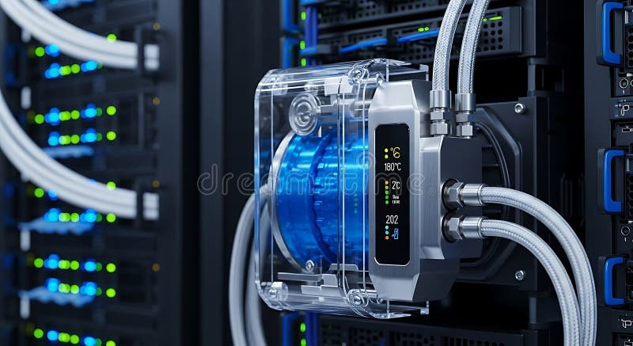

L'engagement RSE dans le numérique
La Responsabilité Sociétale des Entreprises (RSE) joue un rôle central dans le métier d’ingénieur en Sciences du Numérique. Alors que la transformation numérique, le cloud computing et l’intelligence artificielle accroissent les besoins en calcul et en bande passante, concevoir des infrastructures performantes ne suffit plus : nous devons garantir leur sobriété énergétique, leur résilience et leur durabilité dès la phase d’architecture.

Le futur vert des datacenters
Centres névralgiques du cloud computing et des réseaux, les datacenters font face à un double défi : absorber la croissance exponentielle du trafic de données tout en réduisant drastiquement leur empreinte carbone et hydrique. En tant qu’alternant ingénieur solutions client en réseau, cloud et sécurité chez Orange Business, je m’intéresse particulièrement aux leviers technologiques qui transforment ces infrastructures critiques vers un modèle durable.
PUE < 1,2
Objectif d'efficacité énergétique pour les datacenters de nouvelle génération
100 % Renouvelable
Approvisionnement via contrats verts (PPA) et ordonnancement bas-carbone des charges
Chaleur fatale
Récupération thermique réinjectée dans les réseaux de chaleur urbains
Refroidissement innovant & Efficacité énergétique

Le refroidissement représente historiquement une part majeure de la consommation électrique d’un datacenter. Les infrastructures de nouvelle génération remplacent la climatisation traditionnelle par le free cooling (utilisation de l’air extérieur), le refroidissement liquide direct-to-chip et le refroidissement par immersion. Combinées à des capteurs IoT et à l’IA pour ajuster les flux d’air en temps réel, ces technologies font baisser le PUE (Power Usage Effectiveness) tout en minimisant la consommation d’eau (WUE).
Énergie décarbonée & Ordonnancement intelligent

La transition vers des datacenters verts repose sur le financement direct des énergies renouvelables via des Power Purchase Agreements (PPA) et sur une implantation stratégique à proximité de sources électriques bas-carbone. Au-delà de l’approvisionnement énergétique, le carbon-aware computing permet désormais de planifier les charges de travail non urgentes (sauvegardes, entraînement de modèles d’IA) aux heures et dans les régions où le réseau électrique affiche la plus faible intensité carbone.
Récupération de chaleur fatale & Économie circulaire

Plutôt que de dissiper l’énergie thermique dans l’atmosphère, les datacenters modernes deviennent de véritables chaudières numériques. La chaleur fatale captée sur les serveurs alimente directement des réseaux de chauffage urbain, des immeubles résidentiels, des serres agricoles ou des piscines municipales. Parallèlement, l’économie circulaire gagne du terrain dans la gestion du matériel : allongement de la durée de vie des serveurs, reconditionnement des équipements réseau et recyclage des métaux critiques.
Sobriété Cloud & Réseau & GreenOps

Un datacenter vert n’a de sens que si les architectures hébergées sont elles-mêmes éco-conçues. L’approche GreenOps vise à optimiser l’allocation des ressources cloud (virtualisation, conteneurisation, extinction automatique des environnements inactifs) et à rationaliser le trafic réseau pour éviter le surdimensionnement. Réduire le volume de données transférées et stockées diminue directement la sollicitation matérielle et l’impact environnemental global.
Et après ? Ma vision de futur ingénieur

Dans la continuité de mon alternance chez Orange Business et de ma future spécialisation en cybersécurité et cloud computing, je souhaite intégrer systématiquement les critères environnementaux dans mes choix d’architecture technique. Qu’il s’agisse de sélectionner des hébergeurs souverains et bas-carbone, d’optimiser la consommation énergétique des infrastructures réseau ou d’appliquer les principes de sobriété numérique dès la conception, mon objectif est de concilier haute disponibilité, sécurité et responsabilité environnementale.